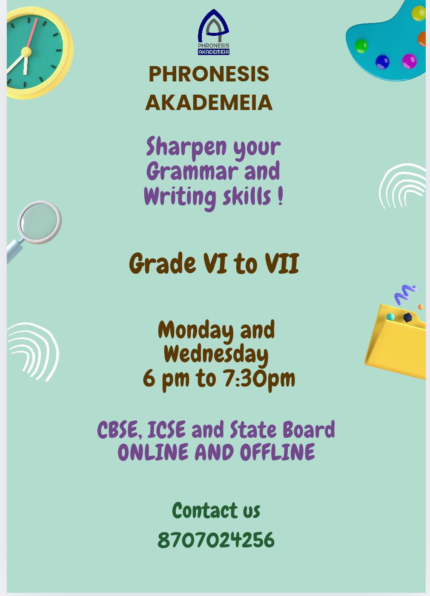
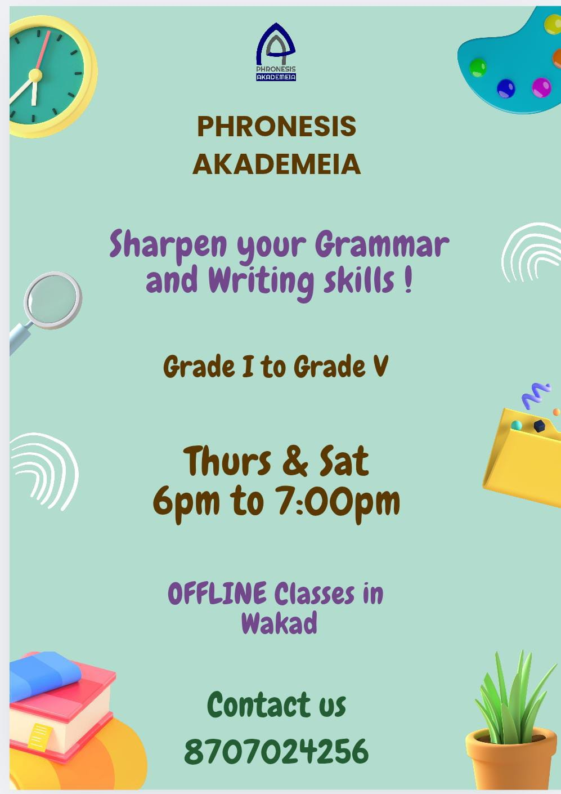
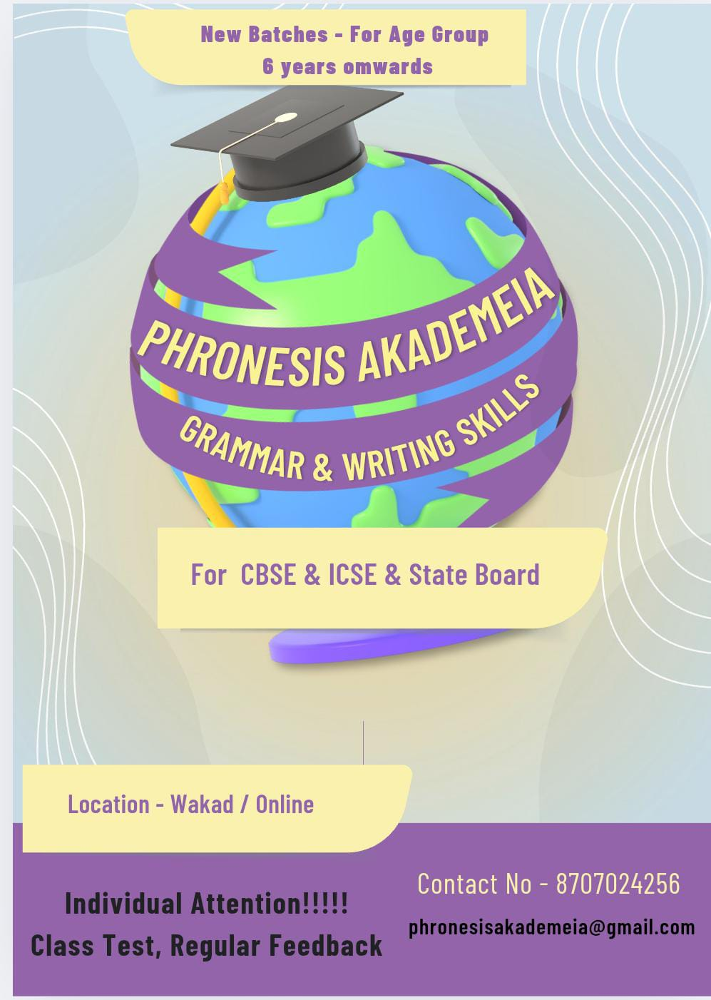
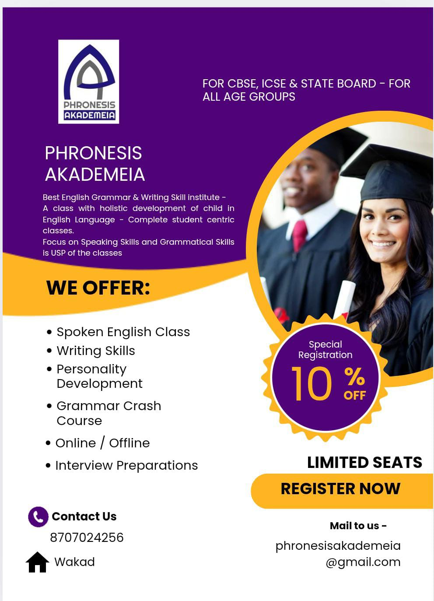

Our Courses
- Course 1- Spoken English Class
This course is designed to help learners gain fluency and confidence in spoken English. Through interactive activities, real-life conversations, and pronunciation practice, students will improve their ability to express themselves clearly and effectively in English.
- Course 2- Writing Skills Class
A comprehensive course focused on enhancing writing abilities. Students will learn how to write with clarity, coherence, and creativity—covering everything from sentence construction to essay and story writing tailored to academic and real-world contexts
- course 3- Personality Development
This course aims to build strong interpersonal skills, self-confidence, and presentation abilities. With activities in communication, body language, and public speaking, students develop a well-rounded personality suited for academic, professional, and social settings.
- Course 4- Grammer Crash Course
A targeted, fast-paced program to strengthen grammar fundamentals. Ideal for learners who want to quickly master core grammar rules for improved writing and speaking. The course includes practical applications and exercises for retention and clarity.
- Course 5- Interview Preprations
A specialized course to prepare students for academic and professional interviews. The training includes mock interviews, confidence-building techniques, and guidance on answering common and complex questions effectively.
All classes available in both online and offline mode



